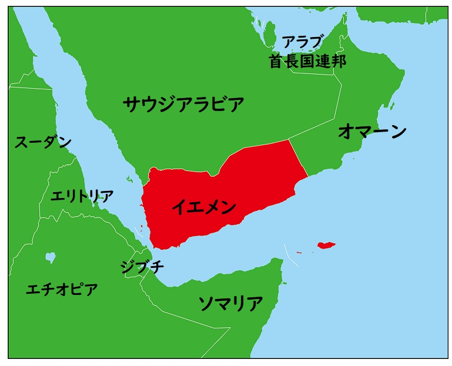
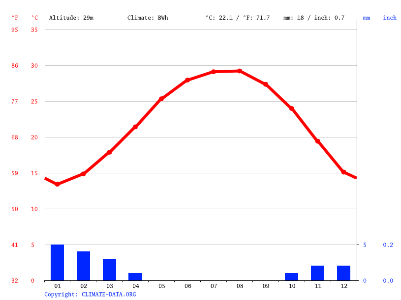
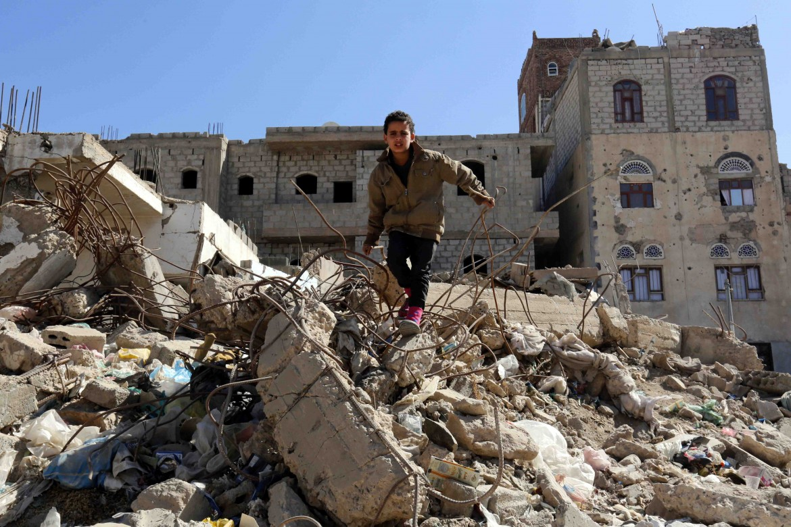
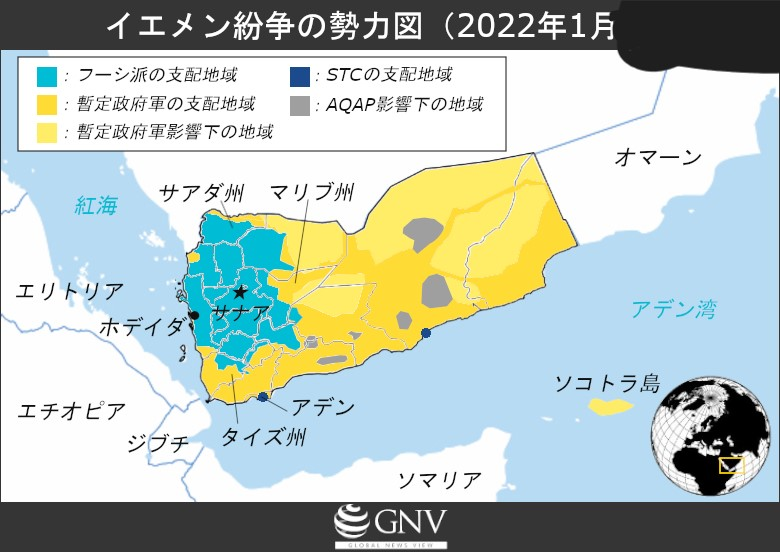
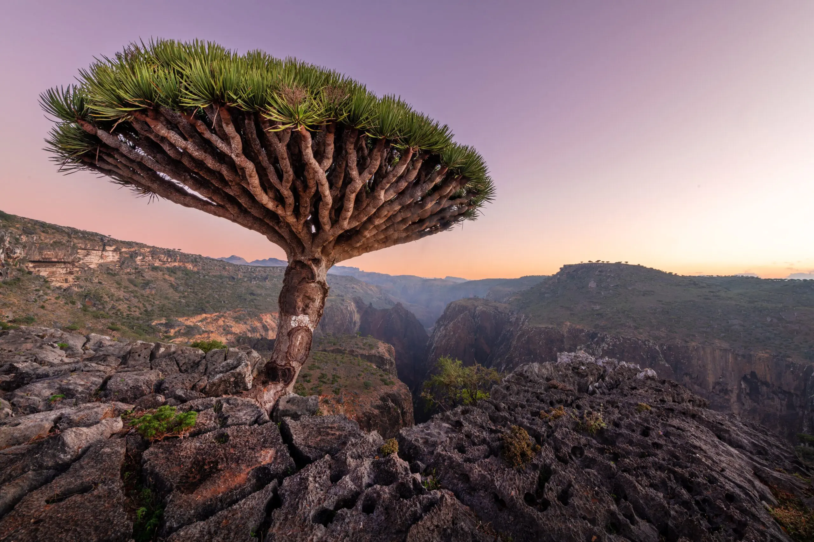

位置や分布
イエメン共和国はアラビア半島の南端に位置し、アラビア海と紅海に挟まれています。
場所と気候
①サウジアラビアやオマーン、アラブ首長国連邦と国境を接しています。 また、国名はアラビア語で右を意味するヤマン (يَمَن、yaman) から由来しているそうです。 共和制の国家です。
②夏でもあまり気温は上がらず過ごしやすい地域です。しかし、秋以降は朝晩に冷え込むので、防寒具が必要になります。1日の寒暖差が大きく、日中は30℃、夜間は0℃になることも。
人間と自然環境の相互依存関係
鉱物資源や石油は豊富で、それらの輸出に頼っていたのですが、 2015年以降、紛争激化で石油・ガス収入が激減してしまいました。
建物は破壊され、国内を経済混乱へと陥れました。
空間的相互作用
国内で様々な勢力が確立し、権力と資源をめぐって紛争が起こりました。
イエメン紛争は「世界最悪の人道危機」と呼ばれるほど、戦闘員だけでなく多くの民間人犠牲者を出している。2021年末までの直接死と間接死を合わせた推定死者数は377,000人に上り、420万人が避難民となった。
地域の特色と観光スポット
①イエメンには独特の文化や歴史があり、古代からの建築物や伝統的な衣装「カンドゥーラ」が見られます。
②有名な観光スポットとして挙げられるのは、「ソコトラ島」です。 まるで地球外のような風景や「リュウケツジュ」という木が特徴の島です。↴
SDGｓとイエメン
イエメンでは貧困削減や教育の普及など、持続可能な開発目標（SDGs）の達成に向けた取り組みが進められています。

イエメン共和国は、アラビア半島の最貧国であるため、まだまだ貧困の問題は続いていくでしょう。